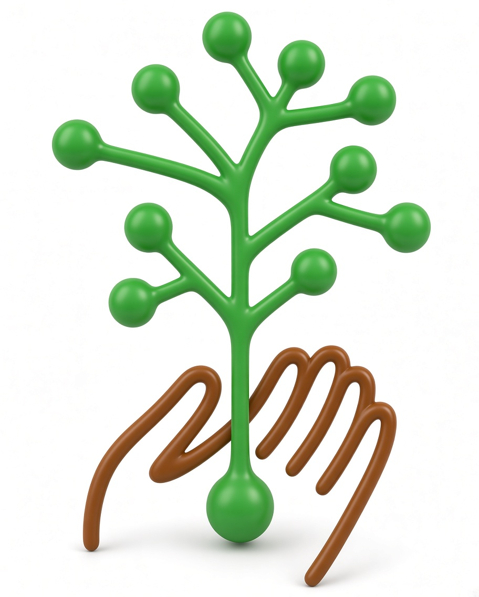
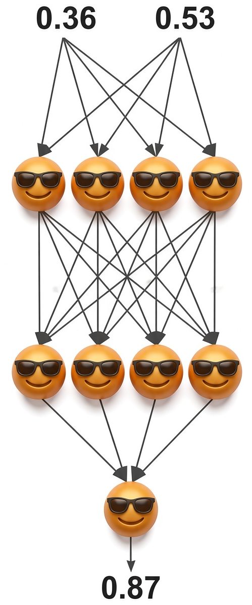
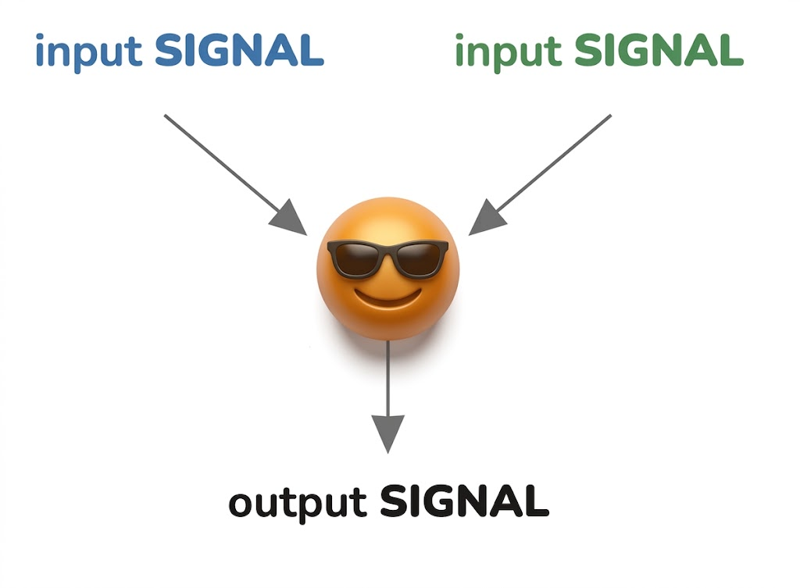
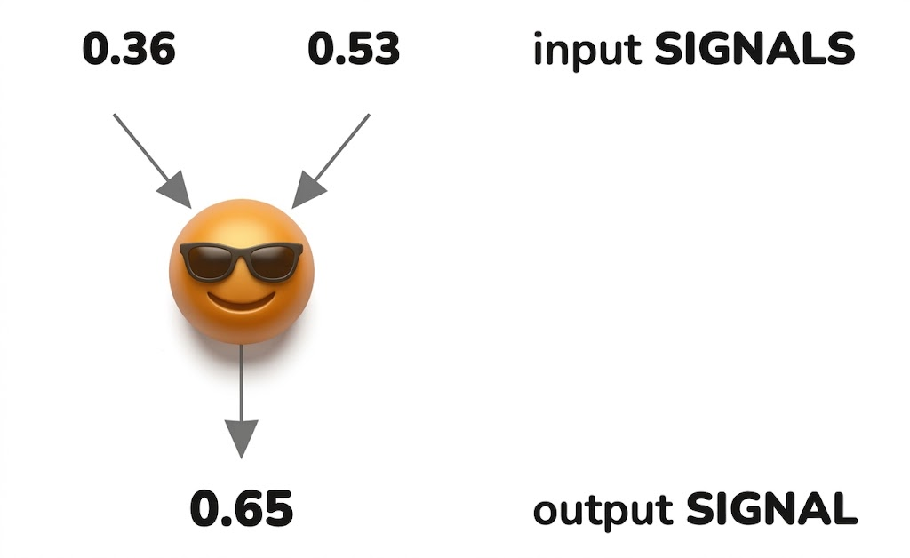
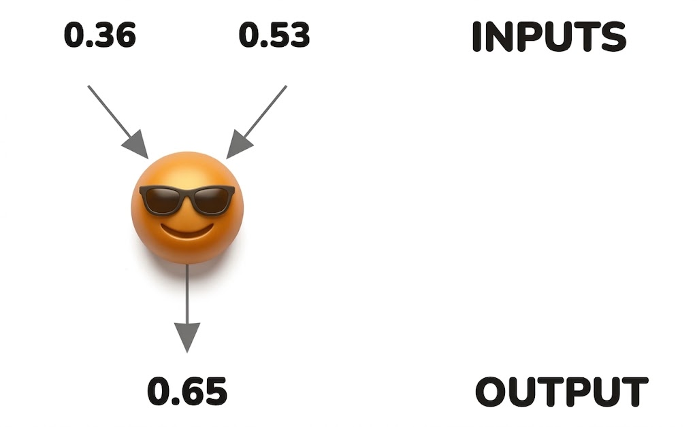

MACHINES
LEARN AND
THINK
Simple Math Behind
Modern AI
and adults —
together
Right now, the world is talking about AI — the most transformative technology of our era. Yet very few people actually understand how it works. This course changes that.
You’ll discover how the most advanced AI systems — called Transformers (like ChatGPT, Claude, Gemini, or Grok) — actually work under the hood. Together as a family, you’ll uncover how they think and, most importantly, how they learn.
What makes this course truly special is that it’s designed for almost absolute beginners. If you know that 5 / 4 = 1.25 and 2 − 3 = −1, you’re ready! 🎉
Use the received knowledge for fun or as a foundation for a top-tier career in today’s AI-driven world.
Our materials are carefully crafted to be clear and accessible even for very young learners — sometimes using repetition by design. We believe that if a typical 10-year-old can understand an idea, most adults can too.
While built for beginners, the course is fully detailed and technical. You’ll gain both a deep conceptual understanding of AI and hands-on experience of building it.
What might otherwise take years of study can be understood here in just hours.
An amusement park for the mind — for anyone curious.
This course can also be eye-opening for university students who are already studying AI in depth.
👉 Try the TRIAL LESSON — and experience a new way of learning AI.
Hey explorers! 🎉
We're going to dive into something amazing: the real secrets of how machines learn and think.
Ready? Let’s go!
Nowadays, there are two kinds of brains: biological brains and non-biological brains — often called machine brains.
For example:
- Biological brains are the brains of humans or animals.
- Machine brains are AI systems — the most powerful of which are called Transformers, like ChatGPT, Claude, Gemini, or Grok.
The main job of every good brain — whether biological or machine — is to learn and think.
And here’s the surprise: at their core, learning and thinking are just doing math. Yes, really! 😯
Math happens in each kind of brain — biological or machine — though through different means.
Interestingly, when we build a machine brain, it learns on its own — so creating it feels less like assembling a LEGO house and more like training or nurturing a living thing.

How is all this even possible?
In this course, you’ll discover the answer.
Every brain is, in essence, a neural network — something like this:

It’s called neural because it’s made of NEURONS.
It’s called a network because NEURONS connect to each other and work together.
Think of each NEURON as a tiny yet cool helper.
You can find these helpers in both biological brains and machine brains — even though biological NEURONS and machine NEURONS are made of completely different things.
But what does every NEURON do?
Actually, every NEURON takes in input SIGNALS and sends out one output SIGNAL.
For example, a NEURON might take in two input SIGNALS and send out one output SIGNAL.

What's a SIGNAL?
Simply put, a SIGNAL is anything — like an electrical impulse — that can be measured or calculated and represented as a number, such as 0.36 or 0.53.
At this point, we don't need to worry about how SIGNALS are measured or calculated. We just need to remember one thing:
Every SIGNAL is something that can be represented as a number.
In more detail, every NEURON:
- Takes in input SIGNALS (e.g., 0.36 and 0.53)
- Does simple math on them to calculate its output SIGNAL (e.g., 0.65)
- Sends out that output SIGNAL

For brevity:
- The input SIGNALS are called INPUTS.
- The output SIGNAL is called OUTPUT.

And here’s the key insight: an OUTPUT from one NEURON can become an INPUT for many other NEURONS in the next layer — connecting the whole team together!
When a brain thinks, every NEURON does very simple math.
At its core, every NEURON works just like a store receipt.
Analogy: RECEIPT
Imagine buying donuts and cupcakes at a store:
| RECEIPT | |||
| UNITS | PRICES | AMOUNTS | |
| donut | 4 | 2.00 | 8.00 |
| cupcake | 2 | 3.00 | 6.00 |
| DISCOUNT | -0.50 | ||
| TOTAL | 13.50 | ||
The math is straightforward:
TOTAL = 4.00 * 2.00 + 2.00 * 3.00 + (-0.50)
TOTAL = 8.00 + 6.00 - 0.50
TOTAL = 13.50
This math can also be represented this way:
| 4.00 | 2.00 | UNITS |
| 2.00 | 3.00 | PRICES |
| 8.00 | 6.00 | AMOUNTS |
| -0.50 | DISCOUNT | |
| 13.50 | TOTAL | |
At its core, every RECEIPT is just a formula like this:
TOTAL = 4.00 * 2.00 + 2.00 * 3.00 + (-0.50)
TOTAL = 8.00 + 6.00 - 0.50
TOTAL = 13.50
In terms of a NEURON, the same math can be represented this way:
| 4.00 | 2.00 | INPUTS |
| 2.00 | 3.00 | WEIGHTS |
| 8.00 | 6.00 | PRODUCTS |
| -0.50 | BIAS | |
| 13.50 | OUTPUT | |
At its core, every NEURON is also just a formula like this:
OUTPUT = 4.00 * 2.00 + 2.00 * 3.00 + (-0.50)
OUTPUT = 8.00 + 6.00 - 0.50
OUTPUT = 13.50
Ultra simple. No math changed. Only names changed.
Importantly, in the case of the RECEIPT, when UNITS change, the TOTAL changes too:
| 3.00 | 5.00 | UNITS |
| 2.00 | 3.00 | PRICES |
| 6.00 | 15.00 | AMOUNTS |
| -0.50 | DISCOUNT | |
| 20.50 | TOTAL | |
Similarly, in the case of the NEURON, when INPUTS change, the OUTPUT changes too:
| 3.00 | 5.00 | INPUTS |
| 2.00 | 3.00 | WEIGHTS |
| 6.00 | 15.00 | PRODUCTS |
| -0.50 | BIAS | |
| 20.50 | OUTPUT | |
Again, no math changed. Only names changed.
The Python code below makes all these calculations instantly.
Just click RUN.
Congratulations! 🎉 You’ve just run your very first machine NEURON.
Try changing INPUT1 to 10 and INPUT2 to 20. Predict the OUTPUT before pressing RUN. 😉
Hopefully, your prediction matches! 👍
The mapping:
| RECEIPT | → | NEURON |
| UNITS | → | INPUTS |
| PRICES | → | WEIGHTS |
| AMOUNTS | → | PRODUCTS |
| DISCOUNT | → | BIAS |
| TOTAL | → | OUTPUT |
A machine NEURON can have many WEIGHTS, but only one BIAS.
In AI, WEIGHTS and BIASES are called PARAMETERS.
If you understand this, you already understand a lot about AI.
Every answer from ChatGPT ultimately comes from billions of tiny calculations that look surprisingly similar to the example above.
But at the very beginning, every machine brain starts with random PARAMETERS, generating nonsense. And the most exciting part is how every brain improves itself after making ERRORS. Indeed, every brain simply changes its PARAMETERS — step by step. This process is called LEARNING or TRAINING.
Today's largest machine brains may each have over 10 trillion PARAMETERS — which sounds massive! But your own brain is still way more complex. Inside your head, you have:
- ~500 trillion SYNAPSES
- ~86 billion NEURONS
You can think of each SYNAPSE as playing the role of a WEIGHT, while each biological NEURON also has properties that loosely resemble a BIAS.
Metaphorically, your brain has over 500 trillion "PARAMETERS" — combining 500 trillion "WEIGHTS" with 86 billion "BIASES".
So, even though a single NEURON does simple math, a massive network of NEURONS can create remarkably intelligent behavior.
To quickly understand the main idea of how machines learn and think, let’s start by building the simplest possible brain: a one-neuron brain. A single NEURON. That’s it.
Even better, this NEURON will only have one PARAMETER: a single WEIGHT. No other WEIGHTS and no BIAS. Just one WEIGHT. That’s it!
In Lesson 1, you’ll watch this NEURON start with a random WEIGHT, make ERRORS, and gradually improve itself — simply by changing this PARAMETER step by step.
So this tiniest-ever brain will first learn from its own ERRORS. Then, after LEARNING, it will be able to think: solving problems it has never seen before.
Indeed, that’s the true power of every good brain: solving problems it has never encountered before.
The tiniest-ever brain is the perfect starting point.
Let’s see how it works!
MACHINES
LEARN AND
THINK
Start small with Lesson 1
Join
Or get the full journey
Join
The course covers the following topics:
- NEURONS
- INPUTS
- WEIGHTS
- BIASES
- OUTPUTS
- FORWARD PASS
- BACKWARD PASS (BACKPROPAGATION)
- CHANGE RULE
- GRADIENT DESCENT
- CHAIN RULE
- ACTIVATION FUNCTIONS
- VECTORS
- NEURAL NETWORKS
- TRANSFORMERS
- TOKENIZATION
- EMBEDDINGS
- MATRICES
- MATRIX MULTIPLICATION
- ATTENTION
- SELF-ATTENTION
- MULTI-HEAD ATTENTION
- POSITIONAL ENCODING
- LAYER NORMALIZATION
- RESIDUAL CONNECTIONS
- FEED-FORWARD NETWORKS
- OPTIMIZATION
- SOFTMAX
- TRANSFORMER BLOCKS
- GENERALIZATION
Don't worry — this course builds your understanding gradually.
Together, we will reinvent modern AI from scratch — step by step.